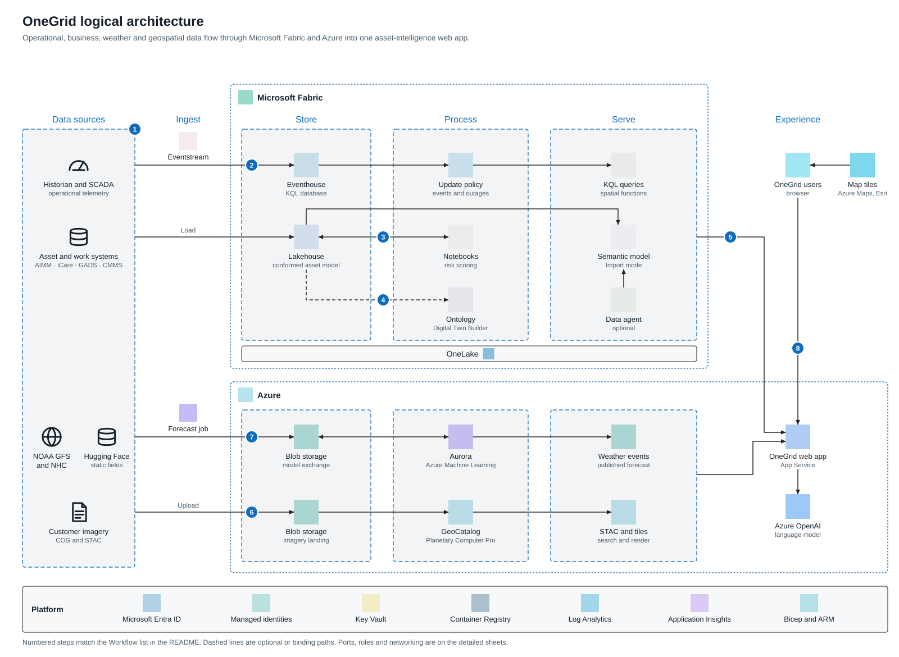
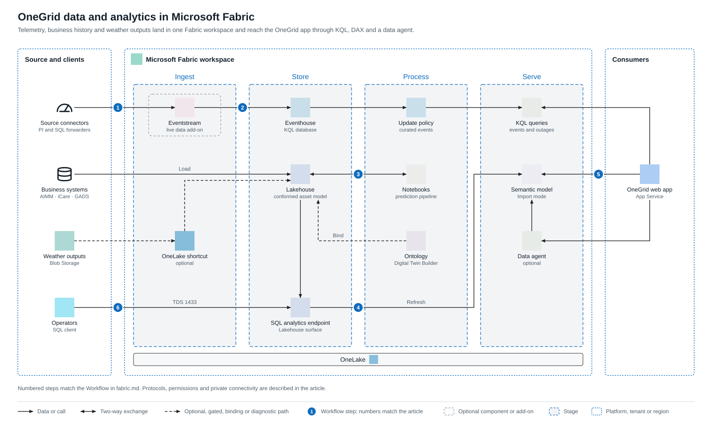
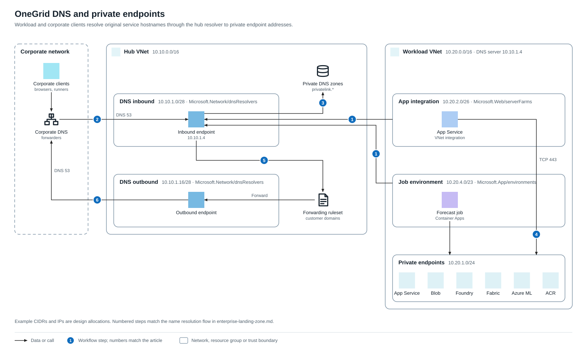
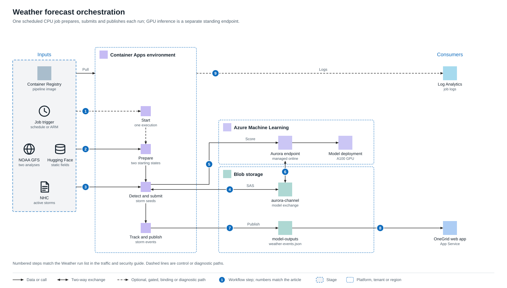

OneGrid architecture sheets
Drawn in the Azure Architecture Center style: official icons with short names, stages and platform zones, and numbered steps that match the Workflow lists in the articles. The baseline is the logical view; the other sheets cover Fabric, enterprise networking, DNS, weather execution, identity, monitoring, regulated controls and recovery. Example network addresses are design allocations, not live inventory.
Diagram guide | Routing, identity and evidence guide
Baseline
Logical view: sources, ingest, store, process and serve in Fabric and Azure, ending in one web app
Light SVG | Light PNG | Dark SVG | Dark PNG



Fabric
Fabric workspace: Eventstream and Eventhouse for telemetry, Lakehouse and notebooks for history and scoring, SQL endpoint refresh into the Import model, ontology and data agent
Light SVG | Light PNG | Dark SVG | Dark PNG



Enterprise networking
Hub and workload VNets with each subnet, a private endpoint beside every service-hosted target, UDR egress through the hub firewall and DNS to the resolver
Light SVG | Light PNG | Dark SVG | Dark PNG


DNS and private endpoints
Workload and corporate clients resolve original service names through the hub resolver: private zones for Azure services, a forwarding ruleset for customer domains
Light SVG | Light PNG | Dark SVG | Dark PNG



Weather orchestration
One scheduled CPU job prepares two starting states, submits them to a standing Aurora GPU endpoint through a Blob exchange and publishes storm events
Light SVG | Light PNG | Dark SVG | Dark PNG



Identity and authorization
Seven principals, each traced from the credential it presents through Microsoft Entra ID to the resources it can reach
Light SVG | Light PNG | Dark SVG | Dark PNG


Logging and monitoring
Six signal sources traced from collection to destination, with baseline-wired collection told apart from enterprise additions
Light SVG | Light PNG | Dark SVG | Dark PNG


Regulated workload
Regulated boundaries: outbound-only OT publication, classified Fabric workspace, private application ingress, approved model and geospatial services, and retained evidence
Light SVG | Light PNG | Dark SVG | Dark PNG


Multiregion recovery
An active primary region and a prepared recovery region behind Front Door Premium, with a gated recovery origin, configured recovery paths and a numbered cutover
Light SVG | Light PNG | Dark SVG | Dark PNG